Liberum Science
A plataforma da Liberum Ratings que aplica inteligência de dados ao mercado de capitais brasileiro. Participamos da criação da plataforma e fizemos a identidade, as submarcas, o site e o lançamento.
Desafio
Lançar um produto novo dentro de uma marca recém-reposicionada. A Liberum Science precisava de identidade própria sem se descolar da Liberum Ratings, e de uma comunicação capaz de explicar o que ela faz: tornar mais simples e intuitivo acessar e analisar relatórios de rating e outras informações financeiras.
Estratégia
Participamos do processo de criação da plataforma, ajustando a experiência ao novo branding da Liberum. A Science foi posicionada como inteligência de dados aplicada: comparar fundos, aprofundar análises e chegar a perspectivas acionáveis para investidores e outros agentes do mercado de capitais.
Escrevemos o manifesto da marca e a narrativa que guiou o lançamento.
Sua parceria estratégica para monitorar investimentos.
Criação
Criamos a identidade da Liberum Science e todos os elementos visuais usados no site e na plataforma, com 27 ilustrações próprias. Escrevemos os textos da landing page, que apresenta os planos Free, Gold e Premium para investidores, gestores, administradores e consultores, e desdobramos a marca no enxoval gráfico, na apresentação comercial e no guia digital.
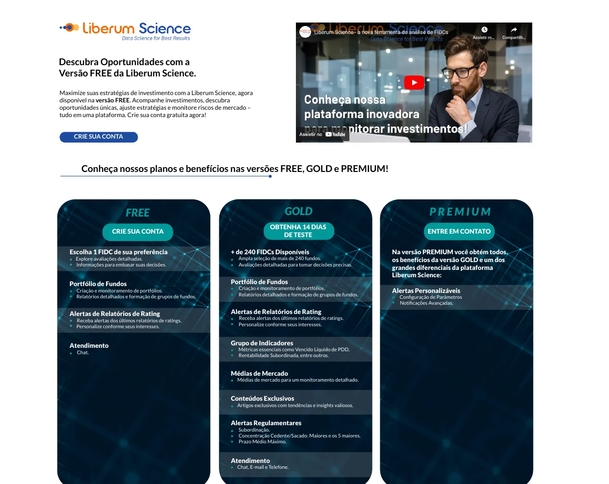
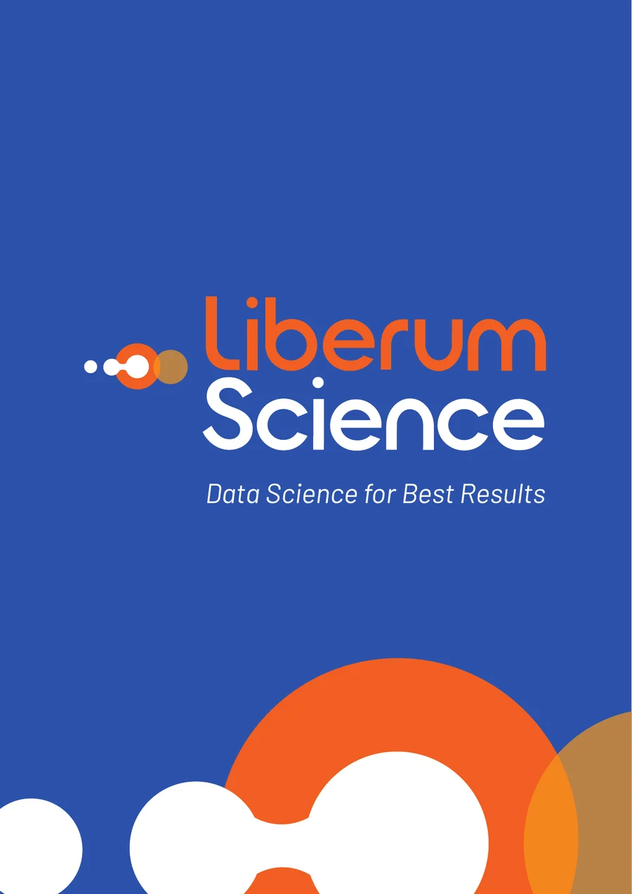
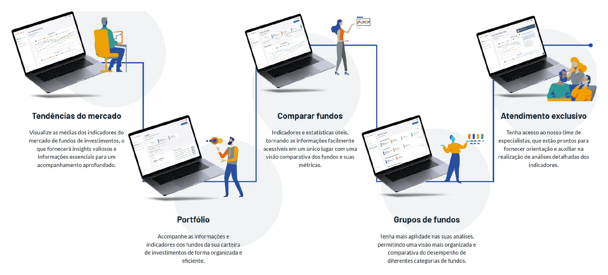
Arquitetura de marcas
A plataforma ganhou submarcas para cada frente de serviço, todas com o mesmo símbolo e o mesmo desenho de letra da Liberum: Liberum University, para educação e conteúdo; Liberum Risk, para análises de risco; e Liberum Analytics, para soluções em dados. Cada uma tem a sua assinatura, derivada de Data Science for Best Results.
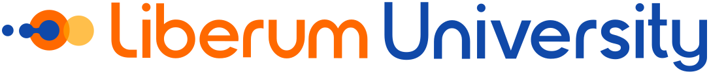
Educação e conteúdo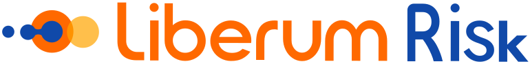
Análises de risco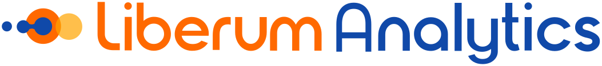
Soluções em dadosLançamento
Participamos da ativação da plataforma em três campanhas. A de lançamento, em novembro de 2023, apresentou a Liberum Science ao mercado com anúncio impresso no Valor Econômico e GIFs em portais.
Depois vieram a campanha Free, para levar o mercado a experimentar a plataforma, com GIFs nos portais Infomoney, Valor Econômico e UOL e mídia paga no Google Ads e no Instagram; e a campanha de Alertas, que destacou os alertas de ratings e regulamentares. No LinkedIn, rodamos também uma campanha de mensagens, e no e-mail marketing criamos textos e arte das campanhas para o comercial no HubSpot.
Campanha de lançamento
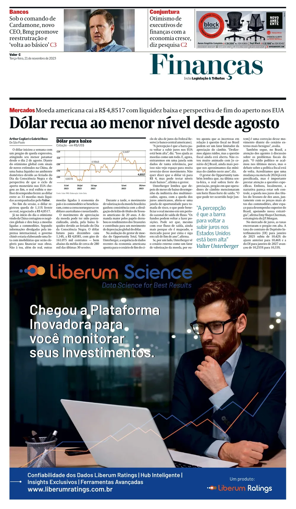
Campanha Free
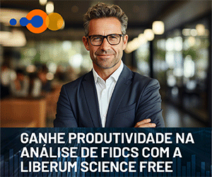
Infomoney, Valor Econômico, UOL, Google Ads e Instagram
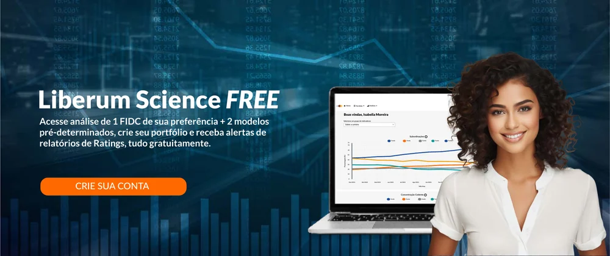
Campanha de Alertas
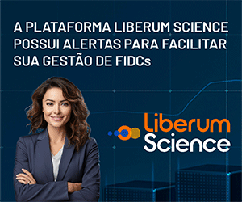
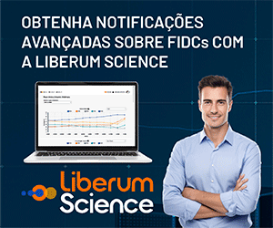
Alertas de ratings e regulamentares
Resultados
Em 40 dias de mídia, encerrados em julho de 2024, as campanhas Free e de Alertas rodaram no Valor Econômico, no InfoMoney, no UOL e no Google. Todos os canais ficaram acima do CTR mínimo esperado para o público, de 0,06%.
| Canal | Impressões | Cliques | CTR |
|---|---|---|---|
| Valor Econômico | 9.287.579 | 10.104 | 0,11% |
| InfoMoney | 860.856 | 2.423 | 0,28% |
| UOL | 1.142.121 | 1.260 | 0,11% |
| 314.000 | 13.600 | 4,33% |
O que entregamos
Da construção da plataforma ao lançamento no mercado.
Plataforma e site
- Participação na criação da plataforma
- Adequação da experiência ao novo branding
- Textos da landing page
Identidade
- Branding da Liberum Science
- Submarcas University, Risk e Analytics
- Elementos visuais do site e da plataforma
- 27 ilustrações próprias
Materiais
- Manifesto da marca
- Enxoval gráfico e apresentação comercial
- Guia digital da Science
Campanhas
- Campanha de lançamento
- Liberum Science Free e 30 dias gratuitos
- Campanha de mensagens no LinkedIn
E-mail marketing
- Campanhas para o comercial no HubSpot
- Textos e arte das peças
- E-mails da plataforma
Vídeo
- Vídeo de divulgação
- Reedições para campanhas
- Peças em vídeo para as redes